1.0 Capstone Project – Drone-Mounted Soil Sensing System
Overview: Developed a drone-mounted robotic arm that uses servo motors and a linear actuator to insert a soil probe into the ground. The objective was to achieve precise, repeatable motion for automated soil sampling, enabling accurate nutrient detection in the field.
Key Contributions: Designed the arm and probe mechanism in SolidWorks; Programmed Arduino-based control for coordinated servo and actuator movement; Conducted field testing to validate reliable probe deployment.
Technologies Used: Arduino, Servo Motors, Linear Actuator, NPK Sensor, SolidWorks, Arduino IDE
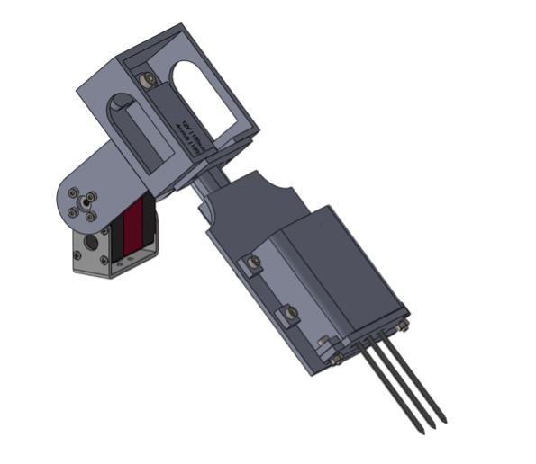 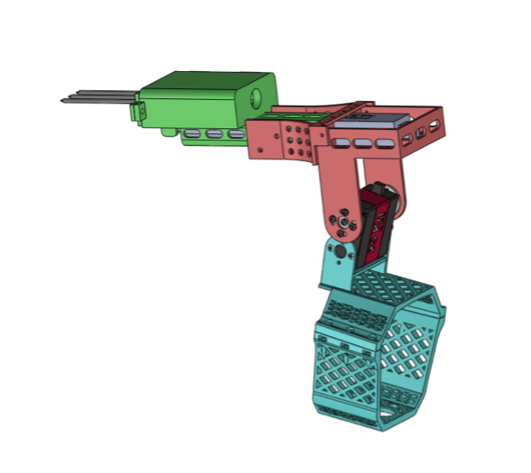 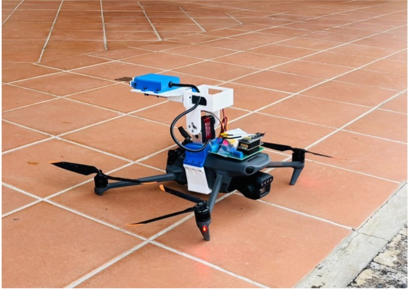 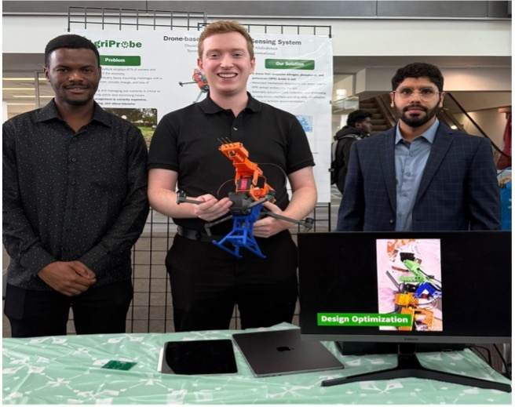2.0 Tractive Indicator Light (TIL) Board – Formula SAE
Overview: Designed and built a Tractive Indicator Light (TIL) board for the Formula SAE electric vehicle to provide clear driver feedback on system safety. The board receives inputs from the Battery Management System (BMS) and the Insulation Monitoring Device (IMD), then drives four indicator lights: two showing the status of the BMS and IMD, one confirming the TIL board itself is functioning, and one blinking red light signaling a fault in either the BMS or IMD.
Key Contributions: Designed the PCB schematic and layout in Altium Designer; Assembled and soldered the manufactured PCB; Validated signal processing and light outputs for fault detection and driver indication.
Technologies Used: Altium Designer, PCB Design, Soldering, Circuit Testing, BMS & IMD Signal Integration

 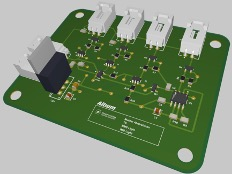
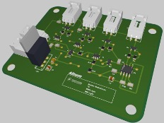
3.0 Line-Following Robot
Overview: Built a line-following robot that uses five IR sensors to detect path deviations and an STM32 microcontroller to process signals in real time. The controller generated motor commands through PWM to two DC motors, enabling smooth and accurate tracking of a predefined line.
Key Contributions: Implemented PID control for precise speed and steering adjustments; Integrated ADC with DMA on STM32; Designed a start/stop control feature and tuned thresholds for robust operation.
Technologies Used: STM32, C Programming, IR Sensors, DC Motors, PWM Control, ADC/DMA
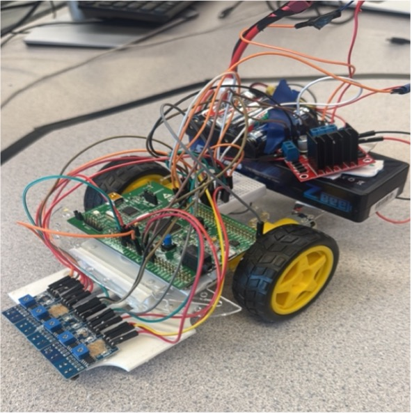 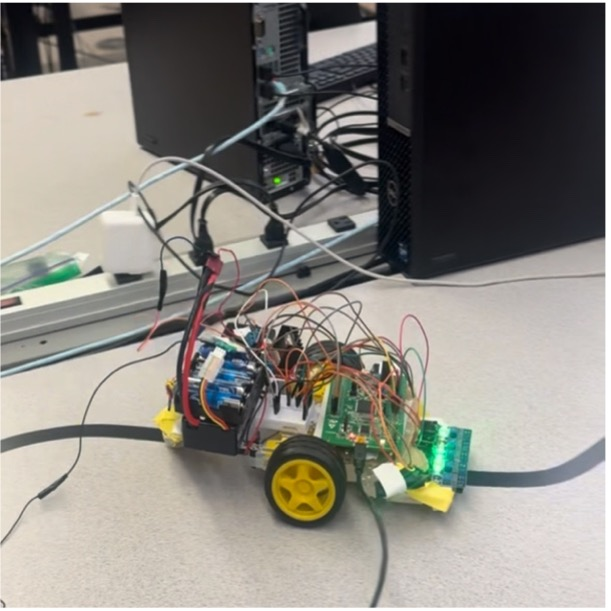 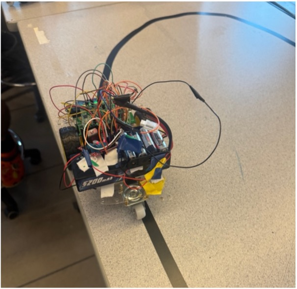 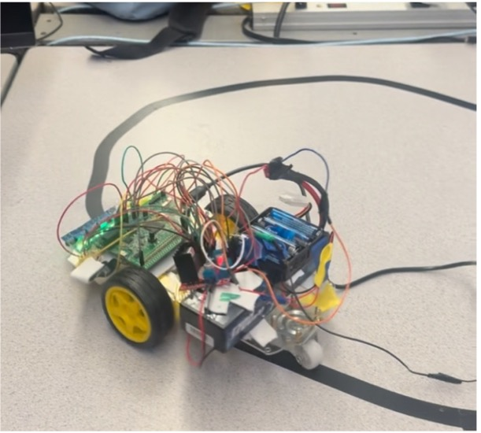4.0 Robot Arm Design & Simulation (SolidWorks + MATLAB)
Overview: Designed a 3-DOF robotic arm in SolidWorks and imported the model into MATLAB/Simulink for simulation. The objective was to analyze kinematics, generate trajectories, and evaluate workspace capabilities for robotic manipulation.
Key Contributions: Created a detailed SolidWorks model of the robotic arm with realistic joint constraints; Implemented forward and inverse kinematics in MATLAB; Simulated joint trajectories and workspace volume.
Technologies Used: SolidWorks, MATLAB, Simulink, Robotics Toolbox, Kinematics Analysis


5.0 Ball Throwing Robotic Arm
Overview: Built a ball throwing robotic arm using a truss structure fabricated from soldered brass bars. A cup was mounted at the end of the arm to hold and launch lightweight balls such as ping-pong balls. The system was driven by a DC motor, with motion controlled through Simulink for testing and trajectory control.
Key Contributions: Designed and constructed the truss arm structure; Integrated a DC motor to drive arm motion; Used Simulink to control and tune performance for consistent throws.
Technologies Used: Brass Rods (Truss Frame), Soldering, DC Motor, Simulink
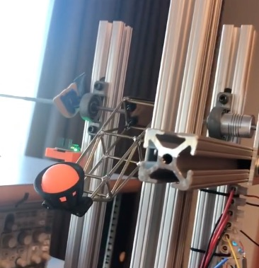6.0 PWM-Controlled DC Motor Fan
Overview: Designed a PWM-based speed control system for a DC motor fan using an 8051 microcontroller. Motor speed was adjusted via PWM signals, with duty cycle values displayed on a three-digit 7-segment display. Speed feedback was obtained from the fan’s built-in encoder.
Key Contributions: Programmed the 8051 microcontroller in Embedded C to generate PWM for motor speed control; Used the fan’s integrated encoder for speed measurement; Implemented a multiplexed 7-segment display for PWM duty cycle.
Technologies Used: 8051 Microcontroller, Embedded C, DC Motor with Encoder, PWM Control, 7-Segment Display
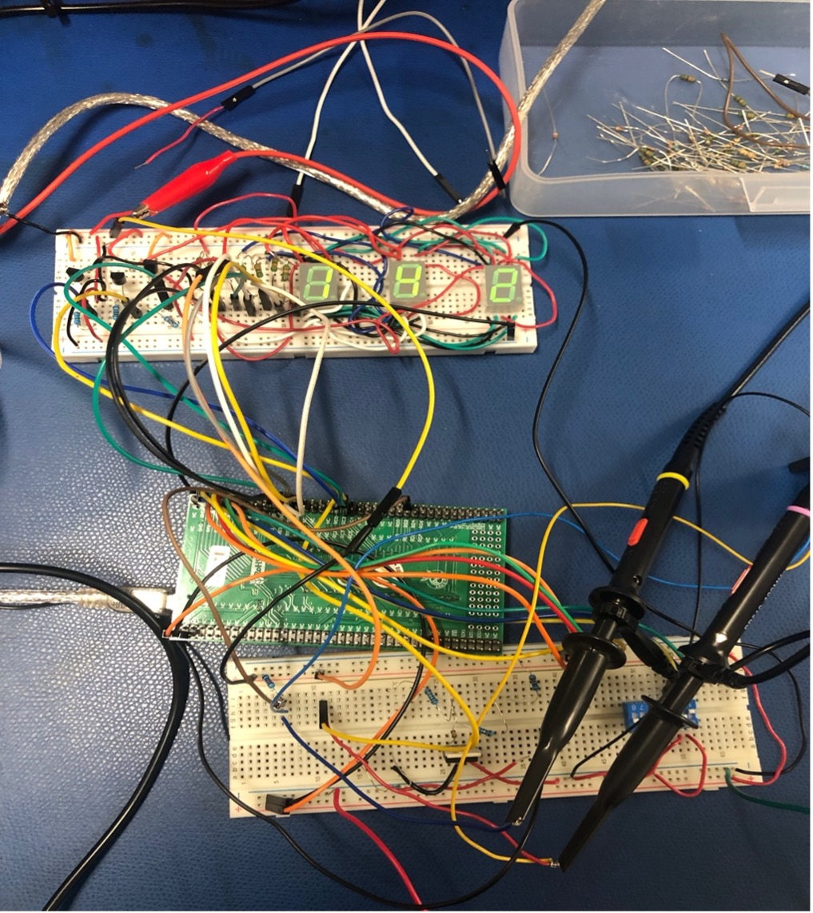7.0 LEGO EV3 Line-Following Robot
Overview: Developed an early line-following robot using the LEGO Mindstorms EV3 platform. The robot used two servo motors for locomotion and optical sensors to detect and follow a black line on a white surface. An additional servo motor was integrated to remove objects blocking its path, enabling basic autonomous navigation.
Key Contributions: Designed and assembled the robot chassis and drivetrain using LEGO Technic; Programmed in RobotC to implement line-tracking and obstacle-removal; Integrated optical sensors, ultrasonic sensing, and servo actuation.
Technologies Used: LEGO Mindstorms EV3, Servo Motors, Colour Sensors, Ultrasonic Sensor, RobotC Programming
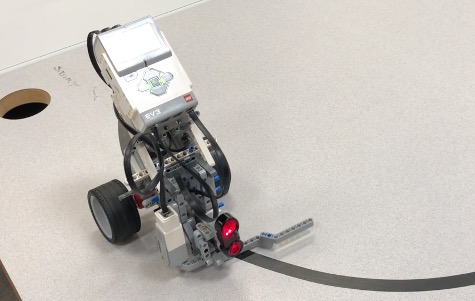8.0 LEGO EV3 Maze-Solving Robot
Overview: Assembled and programmed a maze-solving robot using LEGO Mindstorms EV3. The robot used two servo motors for locomotion, optical sensors for path detection, and an added gyroscope for orientation. It was programmed to autonomously navigate and solve a 4×4 maze by detecting walls, correcting its heading, and making navigation decisions.
Key Contributions: Designed and built the EV3-based robot chassis; Programed maze-solving logic in RobotC; Integrated a gyroscope with optical sensors for navigation accuracy.
Technologies Used: LEGO Mindstorms EV3, Servo Motors, Optical Sensors, Gyroscope, RobotC Programming